Recorrido 360°
Explora nuestros espacios en 360°
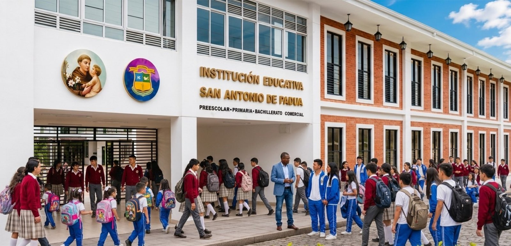

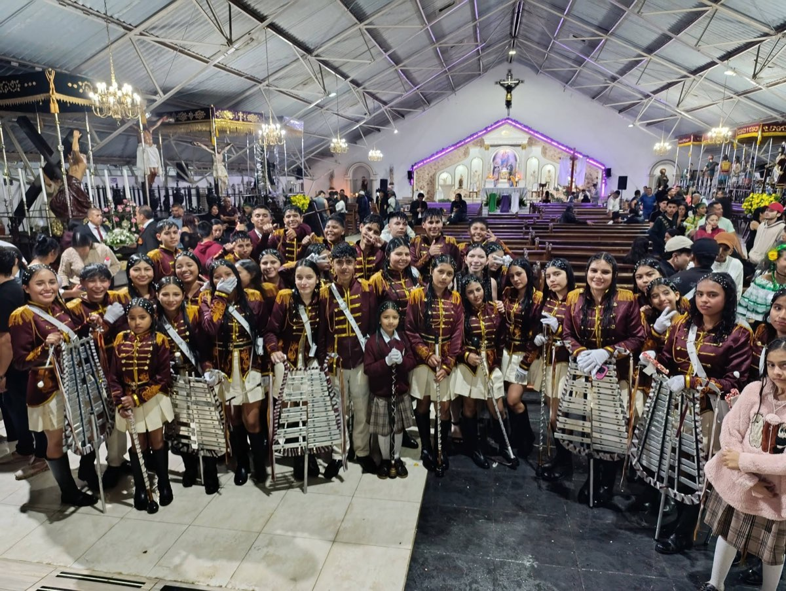
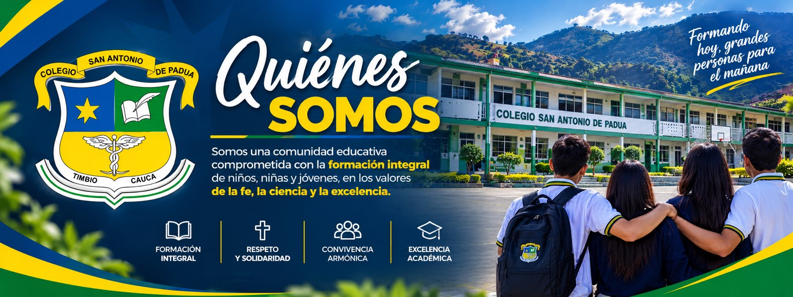
La Institución Educativa San Antonio de Padua, en Timbío, Cauca, tiene historia desde 1926. Nuestro lema institucional es «Fortaleza en el saber, destreza en el hacer e integridad en el ser».
Explora nuestros espacios en 360°
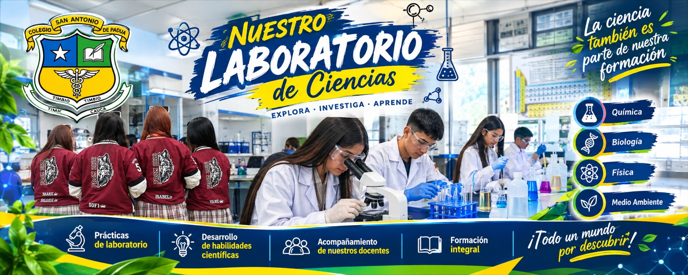
Explora nuestros espacios de aprendizaje
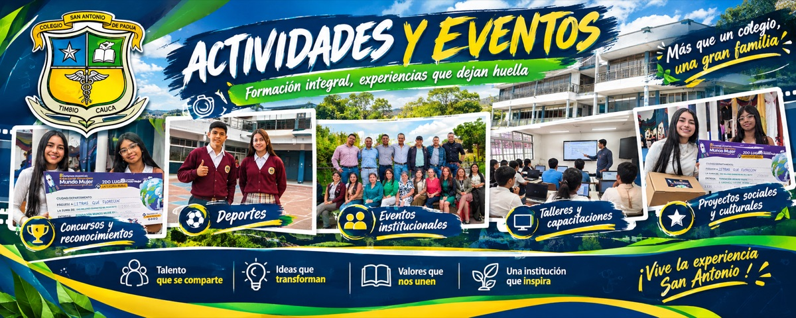
Experiencias formativas e institucionales
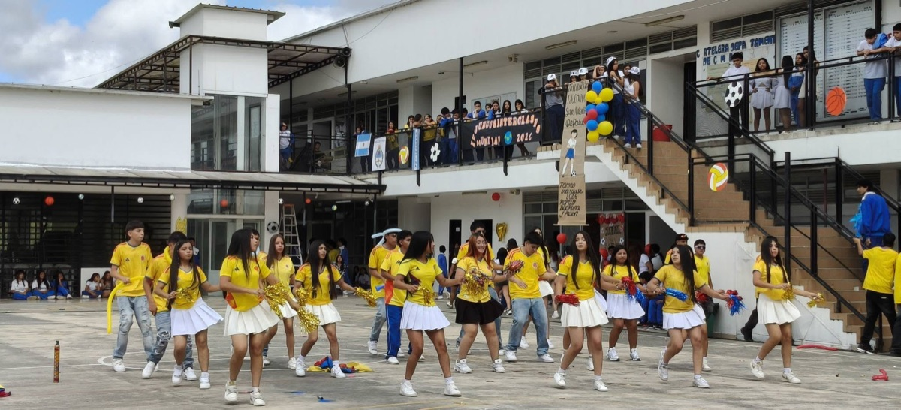
Momentos que fortalecen la vida escolar
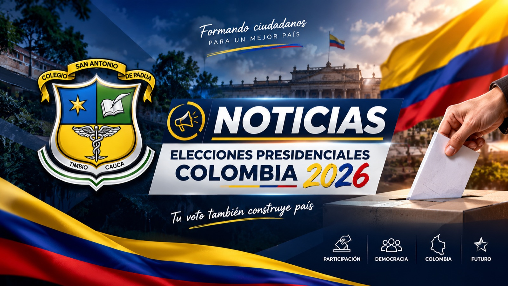
Pieza informativa de referencia sobre el contexto electoral en Colombia.
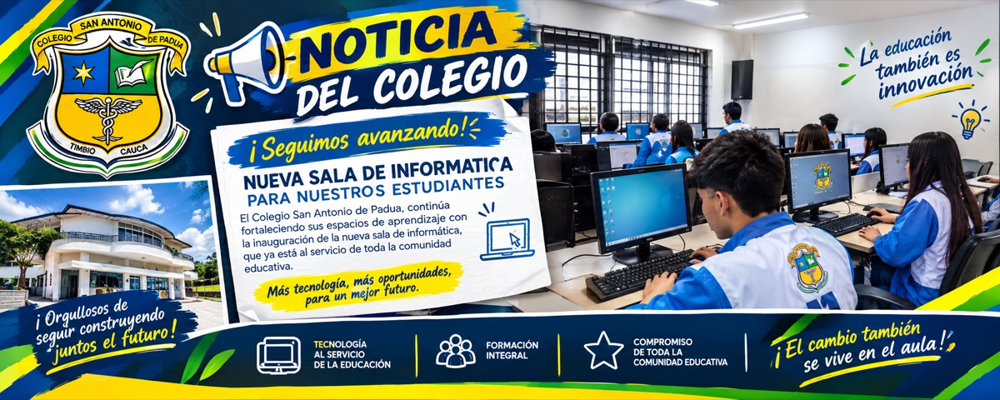
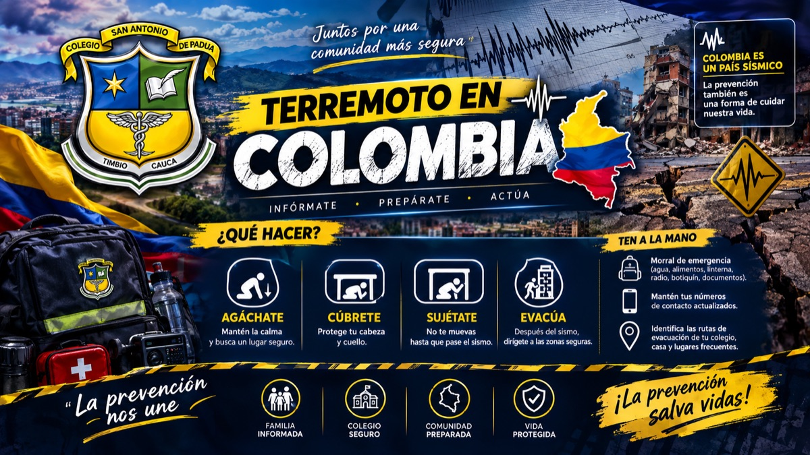
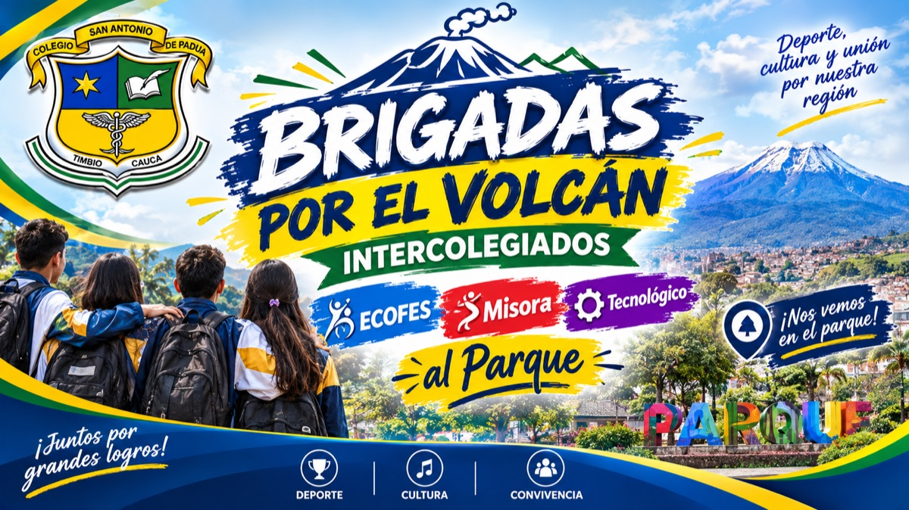
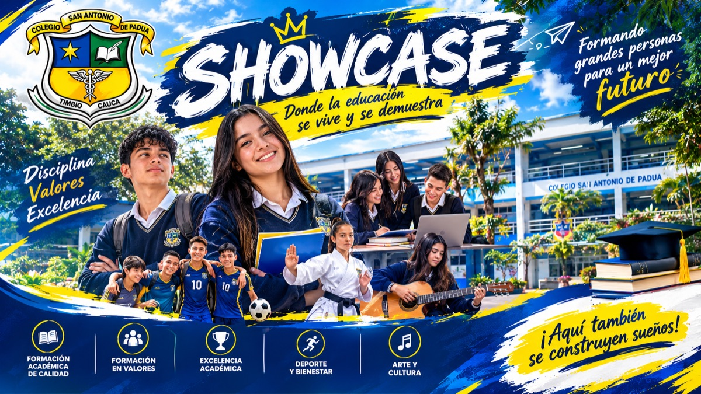